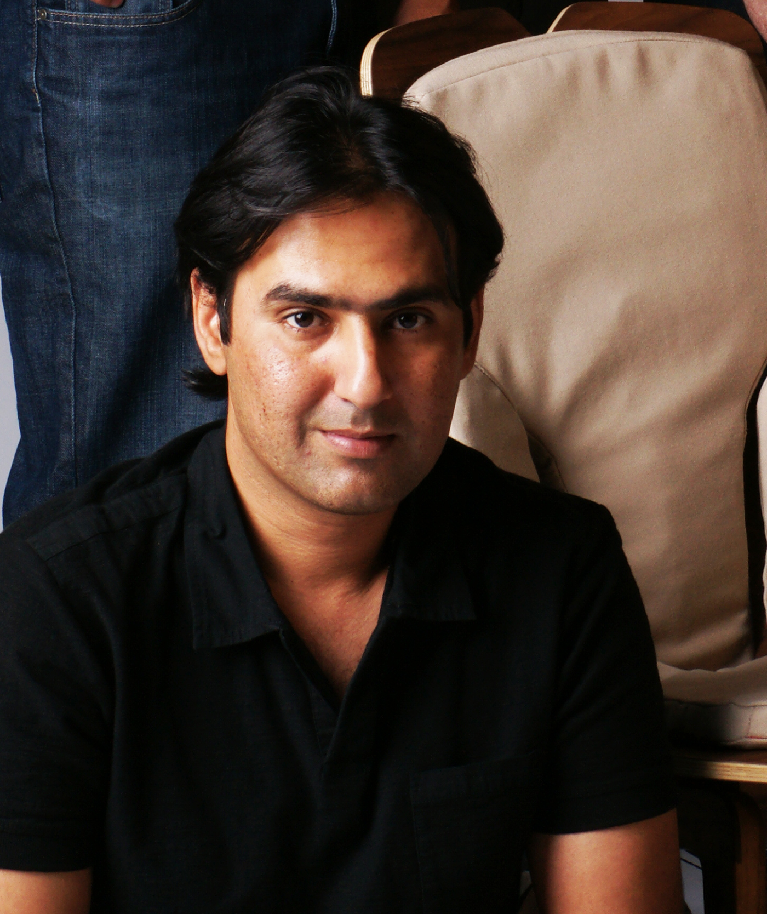

Technology leader · Engineer · Researcher
Ali Israr is a technology leader, inventor, engineer, and researcher with more than two decades of experience advancing interactive touch systems. He has worked across industry-leading haptics programs at Meta / Facebook Reality Labs, Disney Research, and ByteDance, where he helped lead research and product innovation in tactile interfaces and sensory technologies.
His research spans spatial haptics, affective and social touch, cross-modal perception, wearable feedback systems, multimodal interaction design, HCI and robotics. Ali has published more than 100 scientific publications and granted over 30 patents, reflecting sustained contributions to both foundational research and applied product development.
Ali holds a Ph.D. degree in Mechanical Engineering from Purdue University. His contributions have been widely recognized through Best Paper and Best Demo Awards and featured by major media outlets such as CNN, MIT Technology Review, Wired, BBC, NBC, Variety, and The Washington Post.

Selected press
Media Coverage
Research and product work
Featured Projects
Get in touch
Contact
For collaborations, research conversations, speaking, or advising inquiries, send a note directly.